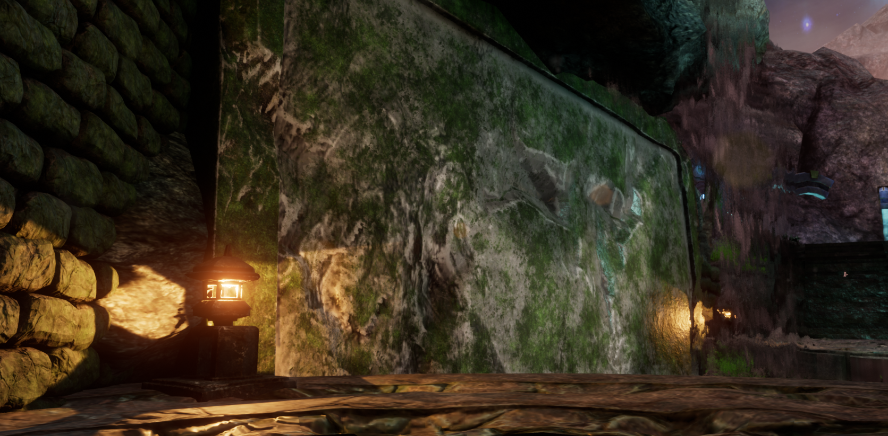

Character
I wanted a character that would fit into the environment but still inching in a sense of being out of place. The characters design is lifted in a mix between western medeival armor tropes for practicality and more traditional eastern style for the cloth portions, the reason the character is masked is mostly due to time constraints of the project that i am unable to properly face-rig the character for animation.


Environment
For the environment i wanted to do a cliffside scene with a hint of magcal flair to it, as seen by the floating rocks, what the demo lacks in gameplay i aim to make up for with impressive visuals, i want the viewer to walk through the scene and notice the subtle storytelling amidst this peaceful ruin.



Videos
/* insert video files here */